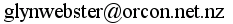

aw2c is a new compiler for the Algol W language. It is intended to be a correct and complete implementation of the language described in the Algol W Language Description, June 1972.
aw2c should be able to compile code intended for the OS/360 Algol W compilers and earlier versions of the MTS Algol W compiler with little or no modification. There may be some incompatibilities: aw2c appears to generate stricter run-time type-checks than previous compilers; aw2c does not provide the MTS Algol's large collection of MTS-specific I/O procedures; the more cunning methods of splitting Algol W into separately compiled units will no longer work (but are no longer necessary.)
aw2c uses Gnu C (with its extensions) as an intermediate language. aw2c is responsible for all parsing and compile-time and run-time error checking, but it passes on the difficult task of generating object code to GCC. GCC should be completely invisible to the aw2c user, any messages from it whatsoever should be considered to be bugs in aw2c. This approach has the happy side-effect of allowing Algol W programs to contain inline C code and to be linked with GCC object code.
Programs compiled by aw2c should be able to produce Algol W specific error messages for all possible runtime errors. A program created by aw2c should never output C assertion errors or a core-dump. See ERROR MESSAGES.
Contents
aw2c - compiler for the Algol W language
aw2c implements the language described in Algol W Language Description, June 1972 very closely. aw2c allows Algol W programs to contain inline C code and to be linked with gcc object code. Read the details in the aw2c manual: aw2c.html [this document].
algolw is the script for compiling single-source Algol W programs:
algolw source.alw program
source.alw is Algol W program's source, program is the name for the executable. A source.c will be produces as a side-effect.
aw2c compiles Algol W programs into Gnu C (with its extensions):
aw2c [source.alw] [-trace] [-o object.c]
If source.alw is left out the Algol W source is read from the standard input. If -o object.c is left out the C source is written to the standard output.
-trace asks aw2c to insert procedure call tracing code.
aw2c C code must be compiled with gcc and linked to the math, Boehm GC and aw2c run-time libraries: -lm -lgc and -lalw. [The -lalw flag has to appear after the object code files. I don’t know why.]:
aw2c main-program.alw -o main.c aw2c separate-procedure.alw -o procedure.c gcc main.c procedure.c other-stuff.o -lm -lgc -lalw -o program
aw2c uses Gnu C (with its extensions) as an intermediate language. aw2c is responsible for all parsing, type checking and compile-time error messages, but it passes on the difficult task of generating object code to gcc. gcc should stay completely invisible when you run algolw, any messages from gcc whatsoever should be considered to be bugs in aw2c.
Programs compiled by aw2c should be able to produce Algol W specific error messages for all possible runtime errors. A program created by aw2c should never output C assertion errors or a core-dump. (However, if you include inline C code you are back on your own.)
The gcc C compiler and libgc, the Boehm GC library.
The aw2c test suite contains parser.alw, a parser generator by Hendrik Boom. Otherwise, copyright 2008 by Glyn Webster.
aw2c is free software: you can redistribute it and/or modify it under the terms of the GNU General Public Lesser GNU General Public licenses as published by the Free Software Foundation, either version 3 of the License, or (at your option) any later version.
/usr/local/bin/aw2c /usr/local/bin/algolw /usr/local/lib/libalw.a /usr/local/include/alw.h
gcc(1) /usr/local/share/doc/aw2c/aw2c.html /usr/share/doc/libgc-dev or <http://www.hpl.hp.com/personal/Hans_Boehm/gc/>
Glyn Webster
The following describes aw2c's implementation of Algol W, compared to 'The Algol W Language Description', June 1972, and what I know of the original ALGOLW or XALGOLW compilers.
(These will certainly break some existing programs.)
(These might break existing programs.)
(These should not break existing programs.)
(These should not break existing programs.)
(These are some things that some Algol W compilers allowed that are not part of the language.)
(These extensions have only been included because they turned out to be necessary. The language implemented by aw2c is not meant to be a superset of Algol W.)
aw2c requires procedure parameters to have explicitly declared formal parameter lists of their own.
[This is painfully incompatible with The Algol W Language Description, but it became necessary because of the way aw2c was implemented. It could be seen as an improvement to Algol W, but that was not the intention.]
In section 5.3.1 of the Algol W Language Reference, replace the <formal parameter segment> and <formal type> rules with these:
<formal parameter segment> ::=
<formal type> <identifier list>
| <formal array parameter>
| <formal procedure parameter>
<formal type> ::=
<simple type>
| <simple type> "value"
| <simple type> "result"
| <simple type> "value" "result"
and add this rule:
<formal procedure parameter> ::=
<simple type> "procedure" <identifier list>
| "procedure" <identifier list>
| <simple type> "procedure" <identifier list> '(' <formal parameter list> ')'
| <"procedure" <identifier list> '(' <formal parameter list> ')'
Note that paragraph 7.3.2.1, "Actual-formal correspondence", applies in turn to the replaced procedure parameters when the body of the procedure is expanded. The paragraph implies that procedure parameters have formal parameters of some sort, the syntactic extensions above makes them explicit.
aw2c requires that actual and formal procedure parameters have identical "procedure types." The <formal parameter list> of the declaration of the actual parameter must by identical to the <formal parameter list> of the formal parameter after all identifiers have been removed from both.
The identifiers in the <formal parameter list> of a <formal procedure parameter> merely indicate the positions of parameters, they serve no other purpose.
A <formal procedure parameter> without a <formal parameter list> declares a procedure parameter without parameters, its actual parameter may be a <statement> or <expression>.
REAL PROCEDURE sum ( INTEGER VALUE first, last;
REAL PROCEDURE f (INTEGER VALUE i) );
REAL PROCEDURE f ( REAL PROCEDURE g, h (REAL a);
REAL ARRAY a, b (*,*) );
REAL PROCEDURE f (REAL PROCEDURE g (INTEGER PROCEDURE h (INTEGER i)));
REAL PROCEDURE f (PROCEDURE statement);
REAL PROCEDURE f (INTEGER PROCEDURE expression);
If an array has a bound pair where the upper bound is one less than the lower bound it is an "empty array", it contains no elements. Any attempt to access an element of such an array is an error.
(Hendrik Boom says this was a useful undocumented feature of the OS/360 Algol W compilers' implementation of Algol W.)
real array (0::-1); integer array (1::0, 1::2);
Strings are stored internally in the ISO 8859-1 (Latin-1) character set. The Input/Output System reads and writes Latin-1.
DECODE, CODE and string comparisons transliterate Latin-1 character codes into IBM1047, an extended version of EBCDIC that includes all the characters of Latin-1. This is to prevent programs that relied on EBCDIC codes from breaking.
See also: Character codes and string order
IBM1047:
+ 00 01 02 03 04 05 06 07 08 09 0A 0B 0C 0D 0E 0F 00 00 01 02 03 9C 09 86 7F 97 8D 8E 0B 0C 0D 0E 0F 10 10 11 12 13 9D 85 08 87 18 19 92 8F 1C 1D 1E 1F 20 80 81 82 83 84 0A 17 1B 88 89 8A 8B 8C 05 06 07 30 90 91 16 93 94 95 96 04 98 99 9A 9B 14 15 9E 1A 40 A0 â ä à á ã å ç ñ ¢ . < ( + 50 & é ê ë è í î ï ì ß ! $ * ) ; ^ 60 - / Â Ä À Á Ã Å Ç Ñ ¦ , % _ > ? 70 ø É Ê Ë È Í Î Ï Ì : # @ ' = " 80 Ø a b c d e f g h i « » ð ý þ ± 90 ° j k l m n o p q r ª º æ ¸ Æ ¤ A0 µ ~ s t u v w x y z ¡ ¿ Ð [ Þ ® B0 ¬ £ ¥ · © § ¶ ¼ ½ ¾ Ý ¨ ¯ ] ´ × C0 { A B C D E F G H I ô ö ò ó õ D0 } J K L M N O P Q R ¹ û ü ù ú ÿ E0 ÷ S T U V W X Y Z ² Ô Ö Ò Ó Õ F0 0 1 2 3 4 5 6 7 8 9 ³ Û Ü Ù Ú 9F
The hexadecimal numbers are codes for non-printing Latin-1 characters.
All source code lines between the directives @AW2C_TEXT and @AW2C_CODE will be ignored by aw2c. This allows long comments containing semicolons to appear in aw2c source code, it also allows chunks of Algol W code to be commented out while debugging.
Directives must start in the first column of a line.
A block comment:
@AW2C_TEXT
I'm leaving this procedure out for now; I don't need it:
INTEGER PROCEDURE triangle (INTEGER VALUE i);
BEGIN
(i**2 + i) / 2
END;
@AW2C_CODE
There are small extensions to some of Algol W's standard procedures, and one alteration (real number to base 16 transfer functions).
There is an implied decimal place in the string encoding format of BASE10 and LONGBASE10. For example:
LONGBASE10(123.456789012345) = " +02+123456789012345"
Such a result can easily be rearranged using substrings. [I think this is what was intended. If I've made the wrong assumption, please tell me.]
If the exponent part of a real number is 3 digits long the BASE10 or LONGBASE10 string encoding format becomes:
±EEE±DDDDDDDDDDDDDDD
BASE16 and LONGBASE16 return 24 character wide fields in GNU C's %a printf format.
[Algol W programs have no way to read the Algol W Language Description's base 16 format for REAL numbers, nor does any existing Unix program I know of, so there didn't seem much point in implementing them in the way described.]
The TIME procedure has additional control codes to allow finer measurements:
code |
result |
units |
|---|---|---|
10000 |
elapsed execution time |
"clocks" |
10001 |
CLOCKS_PER_SEC |
CLOCKS_PER_SEC is the constant defined in the C header <time.h>. TIME(10000) / TIME(10001) will be the elapsed execution time in seconds, represented as a REAL. The GNU C manual says that TIME(10000) will "wrap around" in roughly 72 minutes on a machine with CLOCKS_PER_SEC set to 1000000.
Elapsed execution time means the time the program's process has used on the CPU.
IOCONTROL. There are additional IOCONTROL control codes.
The Input/Output System is an extention of the one described in the June 1972 Algol W Language Description. The Unix standard output stream represents the printer, lines from standard input represent card reader input records.
The Input/Output System is reconfigurable. The initial configuration handles whitespace and page breaks in a relaxed way that better suits stream I/O, this should not effect most programs. The Input/Output System can be returned to strict Algol W Language Description behaviour by setting IOCONTROL control codes or Unix environment variables.
WRITE does not print spaces at the ends of lines or eject the last page by default, see the trim lines and eject last page IOCONTROL control codes below.
WRITE can write REFERENCE values. REFERENCE values have the syntax:
'null'
or:
<identifier> '.' <integer>
where <identifier> is a record's class and <integer> is the record's allocation number. Allocation numbers are assigned to records from a counter that is incremented every time a record is allocated. Predeclared records have negative allocation numbers. The variable I_W controls the field width.
(Hendrik Boom says this was a useful undocumented feature of ALGOLW's implementation of Algol W.
Negative numbers in I_W or R_W cause output fields to be right adjusted.
WRITECARD writes strings as individual lines of characters.
READ pays no attention to the length of input records.
READ allows e to be used in place of ' in REAL constants.
READCARD reads lines of characters into strings, not fixed-length cards. If a line contains more characters than a READCARD actual parameter can hold, the excess characters will be ignored. If the line is shorter than the string, the string parameter will be padded with spaces.
IOCONTROL has extended control codes, mostly to modify the Input/Output System configuration. The configuration can also be set by Unix environment variables.
code meaning default environment variable 4 hard page breaks = on off ALW_HARD_PAGE_BREAKS 5 hard page breaks = off 1dddd output page width 132 ALW_PAGE_WIDTH 2dddd output page height 60 ALW_PAGE_HEIGHT 3dddd output page estimate unlimited ALW_PAGE_ESTIMATE 40001 reset page and line count 40002 unconditional line break 40004 pretty page breaks = off off ALW_PRETTY_PAGE_BREAKS 40005 pretty page_breaks = on 40006 strict line breaks = off off ALW_STRICT_LINE_BREAKS 40007 strict line breaks = on 40008 trim lines = off on ALW_TRIM_LINES 40009 trim lines = on 40010 eject last page = off off ALW_EJECT_LAST_PAGE 40011 eject last page = on dddd stands for the digits of a numeric setting, where "9999" means unlimited.
- Output page height
- is the number of lines per page.
- Output page estimate
- is the number of pages the program may output. "0" means no output. [This prevents your computer centre being flooded with fan-fold paper, I suppose.]
- Hard page breaks
- replace the last line feed of a page with a form feed (^L) or write a pretty page break. The correct Algol W Language Description default is on, but off suits stream output better.
- Unconditional line break
- write a line break immediately, even if nothing has been writen to the line.
- Pretty page breaks
- means rule across the page with "~" signs at the end of a page, rather than issue a form feed code.
- Strict line breaks
- means raise a run-time error if a WRITE field is wider than the output page width.
- Eject last page
- means perform a page break at the end of the program. If this is off a line break is performed instead. The correct Algol W Language Description behaviour is to eject the last page, but a mere line break suits stream output better.
- Trim lines
- means do not print spaces at the end of a line. The last WRITE field on a line may contain spaces on its right-hand side, but actually writing them to the line does not suit stream I/O - it can be very ugly and confusing.
aw2c compiler and run-time error messages are generally more specific than their OS/360 compiler equivalents, except for syntax errors.
Error messages are preceded by the position of the error in the Algol W source file:
<source-file-name>:<line>:<column>:
(This is format used by gcc. Emacs likes it.)
Compile-time errors should only come from aw2c. Any gcc error message should be considered to be a bug in the compiler, aw2c uses gcc purely as an object code generator and linker.
Run-time error messages are sent to "stderr".
A program created by aw2c should be emit a run-time error message for every run-time error that the Algol W language allows. If you see C assertion errors or core-dumps assume they are caused by bugs in the aw2c compiler, not by bugs your Algol W program. (But all bets are off for Algol W programs that include C language source code.)
[These are subject to change. Use grep 'alw_(error|warning)' *.c in the aw2c source directory to locate all run-time error messages.]
aw2c treats Algol W identifiers as case-insensitive. They are always converted to lowercase C identifier. (But see External procedures below.)
An underscore is secretly appended to Algol W identifiers that are Gnu C reserved words, argc, argv, or Algol W predeclared function names that clash with C standard library names (time, round and odd.) For a full list search for "gnuc_keywords" in "codeGen.ml".
Algol W identifier C identifier x15 x15 NEW_PAGE new_page ElderSibling eldersibling const const_ SWITCH switch_ argc argc_ time time_
The procedures and variables of aw2c's run-time library begin with the prefix alw_; temporary variables inserted by aw2c's code generator start with underscores. Avoid using such identifiers whenever possible.
The C type alw_loc represents locations in the original Algol W source code. alw_loc values are passed to run-time library functions that can raise run-time errors. In inline C code alw_loc arguments should always by passed the macro alw_HERE.
The C type equivalents of the Algol W simple types:
simple type C type preconditions INTEGER int REAL double LONG REAL double COMPLEX _Complex double LONG COMPLEX _Complex double LOGICAL int BITS unsigned int STRING(1) alw_chr STRING(n) alw_str x != NULL REFERENCE(...) void * x == NULL or points to a record
The LOGICAL FALSE value is 0, all other values are TRUE, as in C.
The NULL reference is represented by (void *)0. (C's NULL macro is not available to inline C code unless stdlib.h is imported.)
A2WC represents STRING(1) as unsigned char:
typedef unsigned char alw_chr;
Strings longer that one character are represented by pointers to mutable character arrays:
typedef alw_chr *alw_str;
The type of strings longer that one character is referred to as "STRING(n)" in the manual.
STRING(n) variables are typically declared like this: alw_chr x[n];
The aw2c run-time library contains string manipulation functions, these have the prefix alw_str_. Some of these functions have _c, _sc, _cs and _cc suffixes, these are versions that take alw_chr arguments.
This fills a string array with spaces:
void alw_str_init (alw_str dst, int dstlen);
These allocate a copy of an existing string, padded to the correct length with spaces:
alw_str alw_str_new (const alw_str src, int srclen, int dstlen); alw_str alw_str_new_c (const alw_chr src, int dstlen);
They must be used on strings that are about to be returned from procedures. The src argument may be a C string.
These copy one string into another, in place. They are for performing assignments to STRING(n) variables:
alw_str alw_str_cpy (alw_str dst, int dstlen, const alw_str src, int srclen); alw_chr alw_str_cpy_sc (alw_str dst, int dstlen, alw_chr src);
Substrings are pointers into STRING(n) character arrays.
This function returns a pointer to a substring:
alw_str alw_str_sub (alw_loc loc, const alw_str src, int srclen, int index, int length);
There is a runtime error if the substring is not completely in the bounds of the string. alw_str_sub is used to find both STRING(1) and STRING(n) substrings. The result of the call alw_str_sub(loc, src, n, m, 1) should treated as a pointer to alw_chr.
Characters are encoded in Latin-1. However, Algol W's standard string functions transliterate character codes into IBM1047 EBCDIC. CODE accepts EBCDIC codes, DECODE returns EBCDIC codes, and string comparisons are done in EBCDIC order. See Latin-1/IBM1047 Character Encoding
Programs that use strings as packed arrays of bytes should define their own un-transliterated byte-access procedures. See the example raw_decode in the External procedures section below.
These are Algol W's standard EBCDIC code/decode functions:
alw_chr code (int ebcdic); int decode (alw_chr string1);
These are the string comparison functions:
int alw_str_cmp ( const alw_str str1, int str1len,
const alw_str str2, int str2len );
int alw_str_cmp_sc ( const alw_str str1, int str1len,
alw_chr s2 );
int alw_str_cmp_cs ( alw_chr s1,
const alw_str str2, int str2len );
int alw_str_cmp_cc (alw_chr s1, alw_chr s2);
The transliteration tables are:
alw_chr alw_latin1_to_ebcdic[256]; alw_chr alw_ebcdic_to_latin1[256];
Algol W arrays are translated into C functions that return pointers to array elements:
Algol W array C function T ARRAY a (l0::h0) t *a(alw_loc, int) T ARRAY a (l0::h0,l1::h1) t *a(alw_loc, int, int) etc.
(where T is an Algol W simple type and t its C equivalent.)
Array functions can raise "Subscript out of range" run-time errors.
The inline C version of the array assignment a(1,2) := b(3) should be *a(alw_HERE, 1, 2) = *b(alw_HERE, 3).
The actual C array that stores the elements of an array variable a will be called _array_a. But use the array element pointer functions unless you are feeling really keen.
A record designator is translated into a C function that takes a default value argument for each field and returns a pointer to a newly created record structure.
A record field becomes a function that takes a pointer to a record and returns a pointer to the field's value.:
RECORD r (T0 f0, T1 f1,...);
creates C functions with these prototypes:
void *r (t0, t1, ...); t0 *f0 (alw_loc, void *); t1 *f1 (alw_loc, void *); ...
(where T is an Algol W simple type and t its C equivalent.)
Field functions can raise run-time reference type errors.
References are represented by void * pointers. Reference pointers must either be NULL or be pointers returned by a record designator function: RECORD structures contain hidden fields that determine their class at run-time.
This macro accesses the name of a reference's class:
const char *alw_class(void *reference);
The equivalents of Algol W formal parameters (except STRING(n) parameters):
formal parameter C function argument T VALUE x t x T RESULT x t *x T VALUE RESULT x t *x T x t *(*x)(void) T PROCEDURE x t x(void) PROCEDURE x void x(void) T ARRAY x (*) t *(*x)(alw_loc, int) T ARRAY x (*,*) t *(*x)(alw_loc, int, int) etc.
(where T is an Algol W simple type and t its C equivalent.)
RESULT parameters become pointers to values, Name and ARRAY parameters become functions that return pointers to values.
All STRING(n) VALUE/RESULT parameters are represented by alw_str, i.e. pointers to character arrays:
formal parameter C function argument STRING(n) VALUE x alw_str x STRING(n) RESULT x alw_str x STRING(n) VALUE RESULT x alw_str x STRING(n) x alw_str (*x)(void) STRING(n) PROCEDURE x alw_str x(void) STRING(n) ARRAY x (*) alw_str (*x)(alw_loc, int) STRING(n) ARRAY x (*,*) alw_str (*x)(alw_loc, int, int) etc.
When a procedure is called from within Algol W code, RESULT parameters will point to copies of their actual parameters. The copies are assigned back to the actual parameters after the procedure returns. This copying is done at the point-of-call, so when the same function is called from within C code its RESULT parameters will point directly to their actual parameters.
aw2c allows inline C code. Inline C is dropped into aw2c's C code output wherever it appear in the Algol W source. (Whether the inline C is correct is left for gcc to decide.)
There are additional syntactic rules for inline C code. <C code> is the only new syntactic entity:
<C code> ::= '{' <C-like text> '}'
<C-like text> ::= <C-like text> <C string>
| <C-like text> <C comment>
| <C-like text> '{' <C-like text> '}'
| <C-like text> <character>
| <empty>
The first character after the '{' will always be in column 1 of the C code output. (This lets C directives come out right.)
Inline blocks of C statements:
<statement> ::= <C code>
Inline C expressions:
<T expression> ::= '(' <simple type> ')' <C code>
The <C code> contains the C expression, the <simple type> its Algol W type (aw2c cannot infer this).
A C declaration block:
<declaration> ::= '*' <C code>
There may be any number of C declarations in the <C code> block. The declarations will be visible inside other C code blocks, but not visible to Algol W code. C functions can be made visible to Algol W by declaring them as external procedures.
A program may optionally start with a C declaration block, which may include #include directives:
<program> ::= '*' <C code> ';' <program>
Here is tiny example:
*{
#include <stdio.h>
#define USE_TWO
};
begin
*{int i;}
integer j;
j := 1;
{i = 0xff;};
{#ifdef USE_TWO};
j := 2;
{#else};
j := (integer){i % 5};
{#endif};
{ printf("%03d,%03d\n", i, j); /* so, what do those look like? */ }
end.
----stdout
001,002
----end
Function procedures must end with expressions, Algol W type-checking requires this. If you want a function procedure to return from within a C statement, supply a dummy expression. For example:
INTEGER PROCEDURE power_of_two (INTEGER VALUE i);
BEGIN
{ return 1 << i; };
0
END;
An "external procedure" is any procedure defined outside of a program's Algol W source. (See "5.3.2.4 External references".) An aw2c external procedure can be a separately compiled procedure, a C function defined inside <C code> or a C macro.
All external procedures must use the C calling conventions outlined above. (Including Fortran subroutines. See the gcc Fortran manuals for details.)
The syntax of external references has been changed to this:
<external reference> ::= <identifier> <string>
<identifier> is:
<string> is:
The file "alw.h" contains prototypes for aw2c's run-time functions, this can be included into source files for separately compiled external C functions.
Examples:
procedure dater (integer value key, pr; string(12) result date);
c_plus_plus "get_date";
% Here we assume that "get_date" will be linked into the program
later, and note that it will probably be a C++ function. %
integer procedure raw_decode (string(1) value c);
macro "#define raw_decode(c) ((int)c)";
begin
integer procedure rnd(integer value low, high);
auto "";
*{ auto int rnd (int low, int high)
{
assert(low <= high);
return low + random(high - low);
}
};
...
end
*{
#include <stdio.h>
#include <string.h>
#include <assert.h>
alw_str octal (int i)
{
char buffer[25];
sprintf(buffer, "%24o", i);
assert(strlen(buffer) <= 24);
return alw_str_new(buffer, strlen(buffer), 24);
}
};
begin
string(24) procedure octal (integer value x); C "";
write(octal(12345))
end.
The -trace option asks aw2c to insert hooks for tracing or profiling procedure calls. The programmer must provide his own definitions for these hooks.
The programmer must provide these C functions:
void alw_trace_procedure_called (alw_loc call_loc, const char *procedure_name); void alw_trace_procedure_entered (alw_loc procedure_loc, const char *procedure_name); void alw_trace_procedure_exited (alw_loc call_loc, const char *procedure_name);
call_loc will be the location of the procedure call. procedure_loc is the location of the procedure's definition. alw_trace_procedure_exited will not be called if the procedure is exited via a GOTO statement.
[I'm not sure how adequate this set of hooks is. ]
The script "testprograms.ml" in the aw2c source compiles runs a whole directory of Algol W programs, checking them against their test suite data. "testprograms.ml" is used to check aw2c's big wonky test suite, which can be found in the directory "Tests".
aw2c ignores everything in a source file after the program's final full-stop. Test suite data is placed after that full-stop. The format is:
Any deviation from the text in the expected output sections fails the program.
These sections must appear in order, but any section is optional. The default for an empty section is to expect no output, except for the exitcode section, it defaults to 0.
Intention: aw2c is to be open source; aw2c's run-time library may be compiled into any program; the fish is mine.
The aw2c test suite contains parser.alw, a parser generator by Hendrik Boom, it remains copyright to its author. Otherwise, Copyright 2008 by Glyn Webster.
aw2c is free software: you can redistribute it and/or modify it under the terms of the GNU General Public and Lesser GNU General Public licenses as published by the Free Software Foundation, either version 3 of the License, or (at your option) any later version.
aw2c is distributed in the hope that it will be useful, but WITHOUT ANY WARRANTY; without even the implied warranty of MERCHANTABILITY or FITNESS FOR A PARTICULAR PURPOSE. See the GNU General Public License for more details.
You should have received a copy of the GNU General Public License along with aw2c. If not, see <http://www.gnu.org/licenses/>.
The aw2c-fish logo is not covered by the GNU General Public Licences, it is simply copyright to Glyn Webster, 2008.
